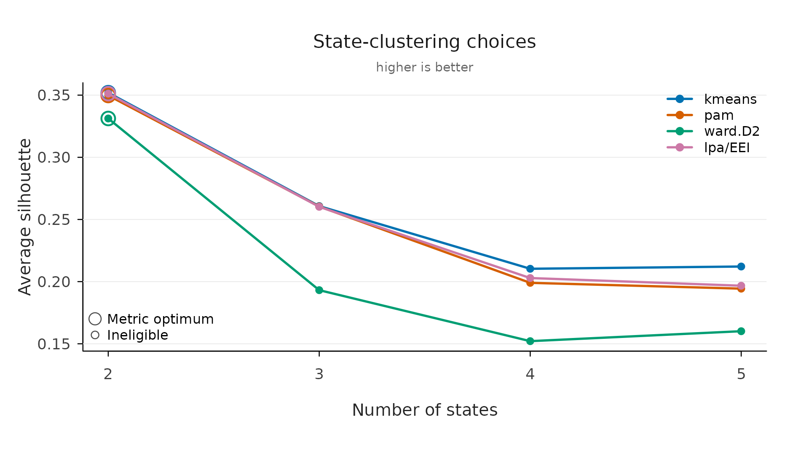

Clustering Algorithms in VaSSTra
Source:vignettes/clustering-algorithms.Rmd
clustering-algorithms.RmdVaSSTra clusters twice, and they are different problems that call for different algorithms:
- States (step 1) group multivariate observations — one student at one time point, described by several indicators — into a small set of interpretable profiles.
- Trajectories (step 3) group whole sequences — one student’s ordered string of states over time — into groups of similar journeys.
The first is ordinary multivariate clustering on a numeric matrix; the second is clustering on a matrix of pairwise sequence distances. This article explains the algorithms VaSSTra offers for each, when to reach for them, and how the automated selection chooses.
States: from indicators to profiles
step1_states() (and
vasstra(..., variables = )) turns the standardized
indicator matrix into n_states profiles. The
state_method argument picks the algorithm; states are then
ordered from the lowest to the highest average standardized profile, so
the labels read low-to-high.
Latent profile analysis (the default)
method = "lpa" fits a Gaussian finite mixture
model with mclust: each state is a multivariate
Gaussian, and every observation gets a posterior probability of
belonging to each state rather than a hard assignment.
lpa_model selects the covariance structure; the default
"EEI" (equal variances, zero covariances — tidyLPA model 1)
is diagonal and equal across states, the most parsimonious choice.
Because it is a probability model, the number of states can be compared
by BIC, and classification quality by entropy and the
posterior probabilities (fit_indices()).
Use it when the indicators are roughly continuous and you want a model-based solution with soft assignments and information criteria — the common default in learning-analytics profile work.
fit <- vasstra(
engagement,
state_labels = c("Disengaged", "Average", "Active"),
state_method = "lpa",
lpa_model = "EEI"
)
#> Using n_states = 3 to match the supplied labels.
#> Selected n_trajectories = 3 (hamming + pam, silhouette = 0.435); see `diagnostics$selection`.
fit_indices(fit)[, c("n_states", "log_likelihood", "bic", "entropy", "prob_min")]
#> n_states log_likelihood bic entropy prob_min
#> 3 -9940.47 20120.13 0.894 0.945k-means
method = "kmeans" minimises the total within-cluster sum
of squared Euclidean distances to cluster centroids (Hartigan–Wong). It
is fast and familiar, gives hard assignments, and assumes roughly
spherical, equal-spread clusters. It has no likelihood, so counts are
compared by silhouette rather than BIC.
Use it when you want a quick, hard, centroid-based partition and the profiles are compact and similarly sized.
Partitioning around medoids (PAM)
method = "pam" (from cluster) is the medoid
analogue of k-means: each cluster is represented by an actual
observation (its medoid), and the algorithm minimises total distance to
medoids. It is more robust to outliers than k-means and works from
pairwise distances (here Euclidean on the standardized indicators).
Use it when you want k-means-style partitions but with more resistance to outliers, or a representative real profile per state.
Hierarchical clustering
method also accepts the agglomerative linkages
"ward.D2", "ward.D", "complete",
"average", "single", "mcquitty",
"median", and "centroid" (base R
hclust), cut at n_states.
Ward minimises the increase in within-cluster variance
at each merge and tends to give compact, balanced clusters;
complete and average control the
between-cluster linkage differently; single chains and
is rarely what you want for profiles.
Use it when you want a dendrogram / nested structure, or a
deterministic linkage rule; ward.D2 is the usual first
choice.
What automation does
Under n_states = "auto", VaSSTra compares two through
six states and selects a recommendation — by BIC for
LPA, by average silhouette for the hard methods — and
never selects a solution whose smallest class holds under
5% of observations (the conventional threshold below
which a latent class is treated as spurious). Supplying
state_labels fixes the count directly.
Trajectories: from sequences to groups
step3_trajectories() (and vasstra()’s
trajectory step) clusters the aligned state sequences. This is
a two-ingredient recipe: a sequence dissimilarity turns
every pair of sequences into a distance, and a clustering
method groups the resulting distance matrix. Both are chosen
explicitly.
Sequence dissimilarities
dissimilarity selects how two sequences are compared —
they capture genuinely different notions of “different”, so the choice
is substantive, not cosmetic:
| Distance | What it counts | Good when |
|---|---|---|
hamming |
Position-by-position mismatches on the aligned grid | Timing matters: being in a different state at the same moment is what separates journeys |
osa, lv, dl
|
Edit distances — insertions, deletions, substitutions (and
transpositions for osa/dl) to turn one
sequence into the other |
Shape matters more than exact timing; small shifts should cost little |
lcs |
Length of the longest common subsequence (the chapter’s default) | Shared ordered sub-patterns matter, regardless of gaps between them |
qgram |
Overlap of length-q substrings | Local motifs (short recurring patterns) matter |
cosine, jaccard
|
Token-set overlap, ignoring order | Only the composition of states visited matters, not their order |
jw |
Jaro–Winkler string similarity | Prefix agreement is important |
hamming and lcs sit at the two ends most
analyses use: when students are in each state versus what
ordered pattern they follow. The chapter analysis uses
lcs. Studer and Ritschard (2015) review how these measures
differ and what each one privileges.
Clustering the distance matrix
method groups the distances: "pam"
(medoids, robust, a representative sequence per group), the
agglomerative linkages "ward.D2" / "ward.D" /
"complete" / "average" / "single"
/ "mcquitty" / "median" /
"centroid", cut at n_trajectories. As with
states, Ward favours compact balanced groups and
PAM favours robustness; ward.D2 with
lcs reproduces the worked chapter analysis.
fit <- vasstra(
engagement,
state_labels = c("Disengaged", "Average", "Active"),
dissimilarity = "lcs",
cluster_method = "ward.D2"
)
#> Using n_states = 3 to match the supplied labels.
#> Selected n_trajectories = 3 (lcs + ward.D2, silhouette = 0.514); see `diagnostics$selection`.
fit$diagnostics$n_trajectories
#> [1] 3Backend
backend = "Nestimate" (default) computes the distances
and clustering through [Nestimate::build_clusters()], which
supports every distance and method above. backend = "base"
is a dependency-free fallback that supports only hamming
and lcs distances — useful for a minimal install.
Choosing among the candidates
Two verbs make the comparison explicit rather than automatic.
state_choices() and trajectory_choices() fit a
full grid of methods and counts and return one tidy row per candidate,
with the recommendation marked within each method —
silhouette for the hard clusterings and
BIC for LPA (model-based criteria only compare within
LPA). Nothing is selected silently; you fit the inspected candidate by
its id.
state_options <- state_choices(
engagement,
n_states = 2:5,
method = c("kmeans", "pam", "ward.D2", "lpa")
)
plot(state_options, metric = "silhouette")
Average silhouette width (Rousseeuw, 1987) is the
shared diagnostic: for each unit it contrasts its average distance to
its own group against the nearest other group, so higher is
better-separated. BIC (Schwarz, 1978) trades model fit
against the number of parameters and is only meaningful for the
likelihood-based LPA. evaluate() and
plot(evaluate(fit)) show the same silhouette on the same
scale, so the method comparison here and the count comparison there
compose into one argument.
When to use what — a short guide
-
Continuous indicators, want soft assignments and information
criteria → LPA (default). Compare counts by BIC; check entropy
and
prob_min. - Quick hard partition, compact profiles → k-means.
- Robustness to outliers / a representative profile → PAM.
-
Want a dendrogram or a deterministic rule →
hierarchical
ward.D2. -
Trajectories where timing separates students →
dissimilarity = "hamming". -
Trajectories where the ordered pattern separates
students →
dissimilarity = "lcs"(the chapter default), withward.D2orpam. -
Unsure → run
state_choices()/trajectory_choices()across a few methods and let the silhouette (and BIC, for LPA) guide you.
References
The algorithms live in the packages VaSSTra builds on; these are
their canonical citations (from citation()) and the method
references given in their help pages.
Packages
- Scrucca, L., Fraley, C., Murphy, T. B., & Raftery, A. E. (2023).
Model-Based Clustering, Classification, and Density Estimation Using
mclust in R. Chapman & Hall/CRC.
citation("mclust"). LPA state estimation. See also Scrucca, L., Fop, M., Murphy, T. B., & Raftery, A. E. (2016). mclust 5: Clustering, Classification and Density Estimation Using Gaussian Finite Mixture Models. The R Journal, 8(1), 289–317. doi:10.32614/RJ-2016-021. - Maechler, M., Rousseeuw, P., Struyf, A., Hubert, M., & Hornik,
K. cluster: Cluster Analysis Basics and Extensions. R package.
citation("cluster"). PAM and silhouette. - Saqr, M., López-Pernas, S., & Misiejuk, K. Nestimate:
Network Estimation, Bootstrap, and Higher-Order Analysis. R
package.
citation("Nestimate"). Sequence distances and trajectory clustering. - van der Loo, M. (2026). stringdist: Approximate String Matching,
Fuzzy Text Search, and String Distance Functions. R package. https://CRAN.R-project.org/package=stringdist. The
definitions the sequence dissimilarities follow (
osa,lv,dl,qgram,cosine,jaccard,jw). - Rosenberg, J., Beymer, P., Anderson, D., van Lissa, C. J., &
Schmidt, J. (2018). tidyLPA: An R package to easily carry out latent
profile analysis (LPA) using open-source or commercial software.
Journal of Open Source Software, 3(30), 978. doi:10.21105/joss.00978.
The “model 1” naming for the
"EEI"covariance structure. - R Core Team. R: A Language and Environment for Statistical
Computing. R Foundation for Statistical Computing.
citation(). k-means (kmeans) and hierarchical clustering (hclust).
Methods
- Hartigan, J. A., & Wong, M. A. (1979). Algorithm AS 136: A
k-means clustering algorithm (
?kmeans). - Ward, J. H. (1963), with the
ward.D2implementation of Murtagh, F., & Legendre, P. (2014), Ward’s hierarchical clustering method, doi:10.1007/s00357-014-9161-z (?hclust). - Kaufman, L., & Rousseeuw, P. J. (1990). Finding Groups in
Data: An Introduction to Cluster Analysis — PAM
(
?pam). - Rousseeuw, P. J. (1987). Silhouettes: a graphical aid to the
interpretation and validation of cluster analysis. J. Comput. Appl.
Math. (
?silhouette). - Schwarz, G. (1978). Estimating the Dimension of a Model. Annals of Statistics, 6(2), 461–464. doi:10.1214/aos/1176344136. BIC.
- Studer, M., & Ritschard, G. (2015). What Matters in Differences Between Life Trajectories: A Comparative Review of Sequence Dissimilarity Measures. Journal of the Royal Statistical Society, Series A, 179(2), 481–511. doi:10.1111/rssa.12125. On choosing a sequence distance.
Method overview and the substantive analysis: VaSSTra chapter of Learning Analytics Methods and Tutorials.